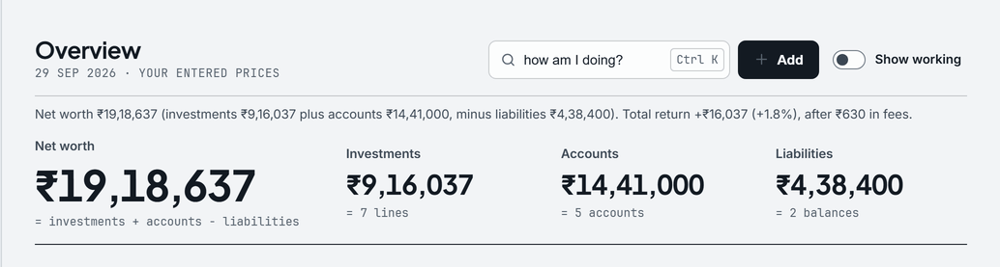
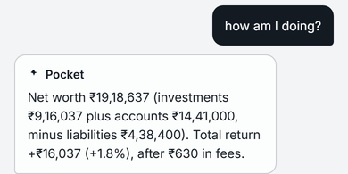
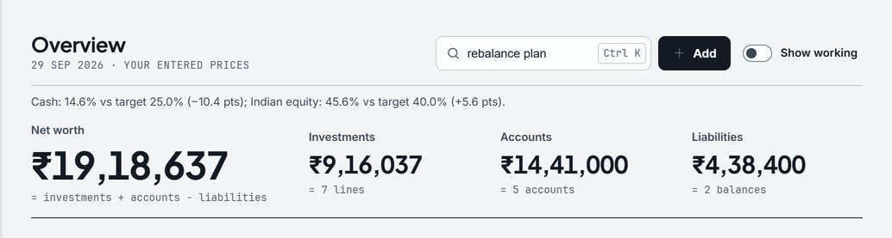
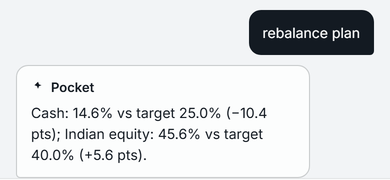
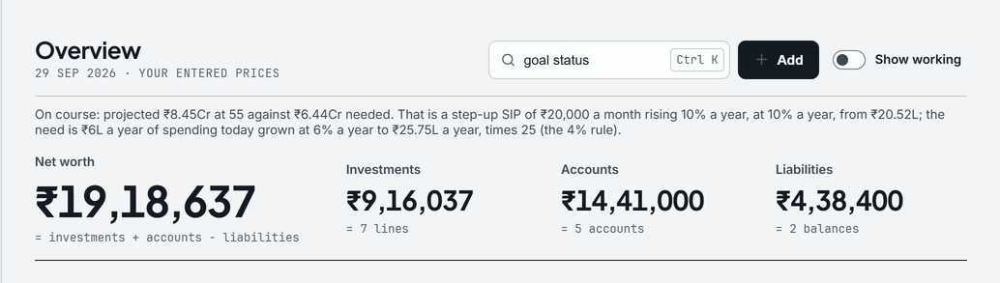
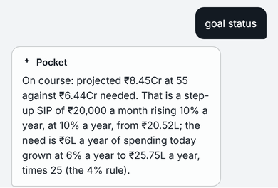

Ask Pocket answers from your figures, and shows the sum.
Not an AI model. It recognises four kinds of question and works the answer out on your computer, the same way each time.
Free on every plan. Nothing is sent.


Pick a question. The answer is Pocket's own, word for word.
The build's answers for the sample person, with each figure's parts.
Net worth ₹19,18,637 (investments ₹9,16,037 plus accounts ₹14,41,000, minus liabilities ₹4,38,400). Total return +₹16,037 (+1.8%), after ₹630 in fees.
- +InvestmentsOverview, Investments · 6 holdings and cash₹9,16,037
- +AccountsAccounts & assets · 5 accounts₹14,41,000
- −LiabilitiesDebt · 2 balances₹4,38,400
- =Net worth₹19,18,637
Return: value less the ₹9,00,000 put in, after ₹630 in fees.
Cash 15%, Indian equity 46%, US equity 20%, Gold 13%, Crypto 7%.
- Indian equityYour mix · target 40%45.6%
- US equitytarget 20%19.8%
- Cashtarget 25%14.6%
- Goldtarget 10%13.3%
- Cryptotarget 5%6.6%
Shares of the ₹9,16,037, rounded in the answer, to one decimal in Your mix.
Cash: 14.6% vs target 25.0% (−10.4 pts); Indian equity: 45.6% vs target 40.0% (+5.6 pts).
- Cash14.6% against 25.0%−10.4 pts
- Indian equity45.6% against 40.0%+5.6 pts
- Gold, crypto, US equity+3.3, +1.6 and −0.2 pts: inside the 5-point bandnot listed
A gap is listed past 5 points either way, as Overview's Needs a look does. Pocket reports the gap; it never says what to buy or sell.


On course: projected ₹8.45Cr at 55 against ₹6.44Cr needed. That is a step-up SIP of ₹20,000 a month rising 10% a year, at 10% a year, from ₹20.52L; the need is ₹6L a year of spending today grown at 6% a year to ₹25.75L a year, times 25 (the 4% rule).
- The need₹25.75L a year at 55 × 25₹6.44Cr
- The projection₹20.52L now, ₹20,000 a month rising 10% a year, 10% a year₹8.45Cr
Goals' own verdict.


Try: 'how am I doing?', 'rebalance plan', 'my allocation', or 'goal status'.
A question outside the four gets the list, not a guess. The tax is on the Tax page: ₹3,03,420, line by line.
How it decides what you asked.
The first kind that matches answers, from the same figures as the page it names.
| When the question has | It answers with | The same figure on |
|---|---|---|
| net worth, how am I, doing, return, profit, gain, loss, earn | Net worth and its three parts; the total return after fees | Overview, Investments |
| rebalance | Each class more than 5 points from its target | Overview, Needs a look |
| allocation | Each class's share of investments | Investments, Your mix |
| goal, retire | Goals' verdict and what it is worked from | Goals |
| anything else | The list of the four kinds | — |
Type in the field at the top of any page and press Enter; on the phone, open Ask from More.
Claude is off, and not in the download.
The source has one more path, to Anthropic with your own key. The build leaves it out, so nothing is sent.
If it ever runs, this is everything it sends
One request per question, to Claude Haiku 4.5, 300 tokens at most, with this summary and the question. Shown for “Can I retire at 55?”, captured from the code with the request stopped before it left.
- Never sent: names, notes, payees, account names, entries, documents.
- Without the key, the answer comes from your figures, as above.
- If Claude answers arrive, they will need your own key, stay off until you turn them on, and be named on the Security page.
model claude-haiku-4-5-20251001
max_tokens 300
system You are Pocket, an honest personal-finance assistant.
Answer from the JSON context only; use lakh/crore
formatting; never invent numbers; never promise returns;
keep answers to 1-3 sentences.
user Context: {
"investments_inr": 916037,
"accounts_inr": 1441000,
"liabilities_inr": 438400,
"net_worth_inr": 1918637,
"return_inr": 16037,
"return_pct": 1.78,
"fees_inr": 630,
"allocation": {"cash": 14.6, "indian_equity": 45.6,
"us_equity": 19.8, "gold": 13.3, "crypto": 6.6},
"rebalance": ["Cash: 14.6% vs target 25.0% (−10.4 pts)",
"Indian equity: 45.6% vs target 40.0% (+5.6 pts)"],
"retirement": "On course: projected ₹8.45Cr at 55 against
₹6.44Cr needed. That is a step-up SIP of ₹20,000 a month
rising 10% a year, at 10% a year, from ₹20.52L; the need is
₹6L a year of spending today grown at 6% a year to ₹25.75L
a year, times 25 (the 4% rule)."
}
Question: Can I retire at 55?What it cannot do.
- Only the four kinds. “Where can I save?” gets the list, not an answer; the spending is on Cash flow.
- Only as current as your entries. With live prices off, holdings are at the last price you entered.
- It reports; it does not advise.A figure, a target, the gap. Pocket is not SEBI-registered.